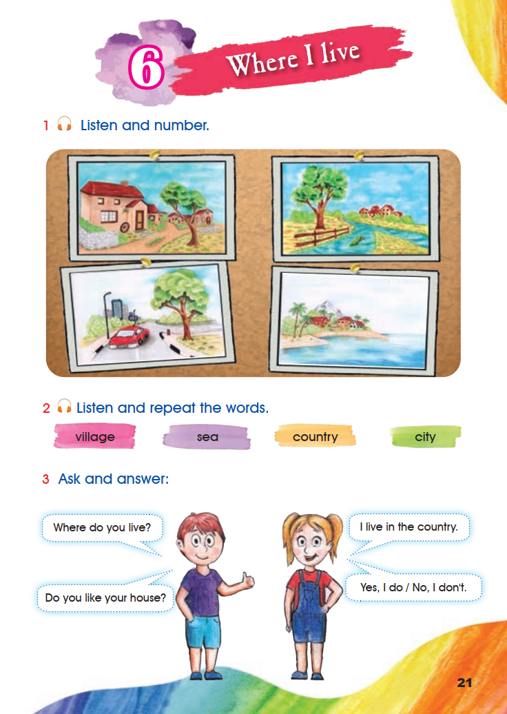
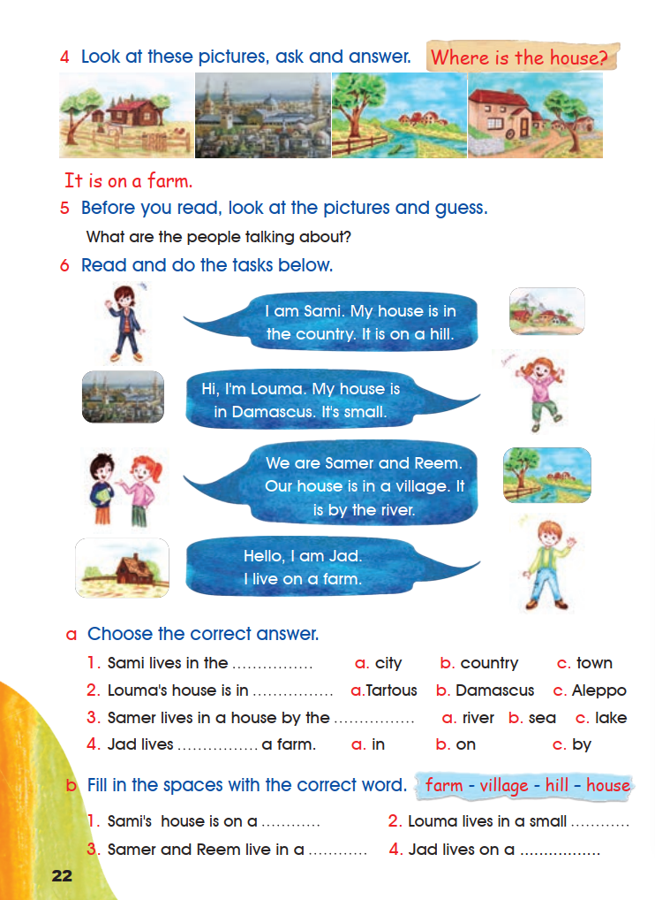
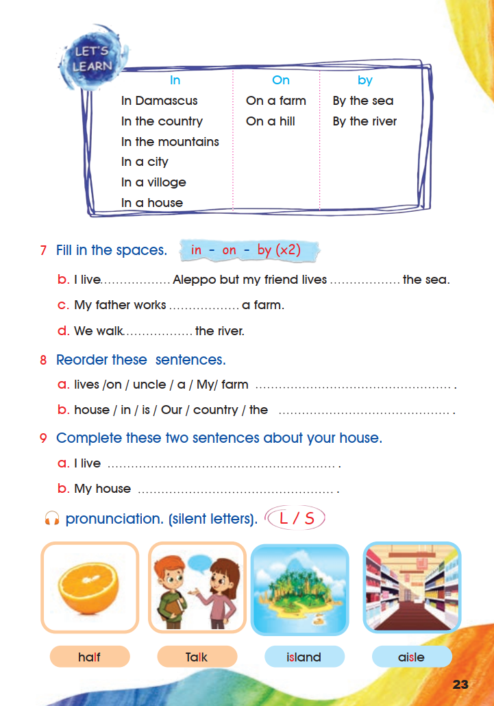

Pupil’s Book
Where I Live · pages 21–23. The complete original source scans below preserve printed content and layout.
Pupil’s Book · page 21
Original source scan 12, preserved byte-for-byte. This page includes all visible exercises, directions, examples and illustrations exactly as supplied.

Accessible text transcription · page 21
6 · Where I Live
1. Listen and number. Four house-and-landscape pictures are shown.
2. Listen and repeat the words.
village · sea · country · city
3. Ask and answer.
Where do you live? · Do you like your house?
I live in the country. · Yes, I do. / No, I don’t.
The recording was not supplied.The complete untouched scan above remains the reference for its illustrations, alignment, tick boxes and picture matching. No missing listening transcript or answer is inferred.
Image provenance and source details
Upload image 12; allocated only to Lesson 6 Pupil’s Book; source page 21. SHA-256 is recorded in the source manifest.
Open original scanAudio limitation: the printed listening task is visible in the scan, but its recording and transcript were not supplied. No listening answers are invented.
Pupil’s Book · page 22
Original source scan 13, preserved byte-for-byte. This page includes all visible exercises, directions, examples and illustrations exactly as supplied.

Accessible text transcription · page 22
4. Look at these pictures, ask and answer. Where is the house?
It is on a farm.
5. Before you read, look at the pictures and guess. What are the people talking about?
6. Read and do the tasks below.
I am Sami. My house is in the country. It is on a hill.
Hi, I’m Louma. My house is in Damascus. It’s small.
We are Samer and Reem. Our house is in a village. It is by the river.
Hello, I am Jad. I live on a farm.
a. Choose the correct answer.
1. Sami lives in the … a. city · b. country · c. town
2. Louma’s house is in … a. Tartous · b. Damascus · c. Aleppo
3. Samer lives in a house by the … a. river · b. sea · c. lake
4. Jad lives … a farm. a. in · b. on · c. by
b. Fill in the spaces with the correct word. farm · village · hill · house
1. Sami’s house is on a …
2. Louma lives in a small …
3. Samer and Reem live in a …
4. Jad lives on a …The complete untouched scan above remains the reference for its illustrations, alignment, tick boxes and picture matching. No missing listening transcript or answer is inferred.
Image provenance and source details
Upload image 13; allocated only to Lesson 6 Pupil’s Book; source page 22. SHA-256 is recorded in the source manifest.
Open original scanPupil’s Book · page 23
Original source scan 14, preserved byte-for-byte. This page includes all visible exercises, directions, examples and illustrations exactly as supplied.

Accessible text transcription · page 23
Let’s Learn
In · On · By
In Damascus · In the country · In the mountains · In a city · In a village · In a house
On a farm · On a hill
By the sea · By the river
7. Fill in the spaces. in – on – by (×2)
b. I live … Aleppo but my friend lives … the sea.
c. My father works … a farm.
d. We walk … the river.
8. Reorder these sentences.
a. lives / on / a / My / farm
b. house / in / is / Our / country / the
9. Complete these two sentences about your house.
a. I live …
b. My house …
Pronunciation (silent letters): half · Talk · island · aisleThe complete untouched scan above remains the reference for its illustrations, alignment, tick boxes and picture matching. No missing listening transcript or answer is inferred.
Image provenance and source details
Upload image 14; allocated only to Lesson 6 Pupil’s Book; source page 23. SHA-256 is recorded in the source manifest.
Open original scanPersonal practice drafts are saved in this browser; source scans remain unchanged.